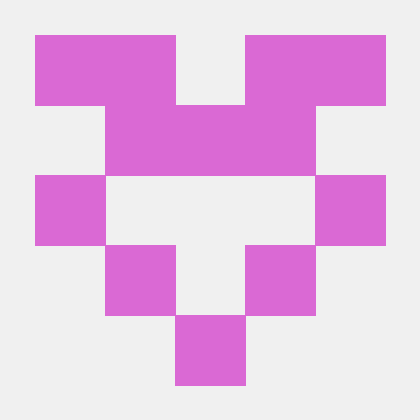

Binary Exploitation
UAF, tcache poisoning, FSOP, stack pivot, shellcode 제약 조건처럼 실제 exploit path를 구성하는 요소를 중심으로 학습합니다.
Security learning log since 2024.01.13
정보 보안과 해킹을 매일 기록하며, CTF 풀이부터 버그바운티와 시스템 연구까지 이어가는 학습 로그입니다.
About

Naver 블로그 보안공부일지를 중심으로 pwnable, reversing, web, crypto, networking, bug bounty 학습을 꾸준히 정리하고 있습니다. 최근 기록은 DreamHack write-up, heap exploitation, FSOP, shellcoding, DPU/P4 실습, OAuth/OIDC 세미나까지 넓게 이어져 있습니다.
단순히 문제 풀이 결과를 모으는 것보다, 취약점이 왜 생겼는지와 익스플로잇 흐름이 어떤 조건에서 성립하는지까지 남기는 쪽을 지향합니다.
Focus
UAF, tcache poisoning, FSOP, stack pivot, shellcode 제약 조건처럼 실제 exploit path를 구성하는 요소를 중심으로 학습합니다.
팀 단위 CTF에서 문제 분배, 풀이 검증, 서버 상태와 플래그 획득 흐름을 빠르게 정리하며 실전 감각을 쌓고 있습니다.
OpenProject bug bounty, OAuth 2.0/OIDC, web parameter handling처럼 서비스 관점의 취약점 분석도 함께 다룹니다.
NVIDIA DOCA, DPL, P4-16, BlueField 기반 데이터패스 프로그래밍처럼 네트워크 인프라 계층의 보안 가능성을 공부합니다.
Activity
총 1294팀 중 11등을 기록했고, 팀은 19문제를 모두 해결했습니다. 개인 풀이로 web, crypto, pwn, misc 계열 문제를 정리했습니다.
팀으로 26문제 중 25문제를 해결했고, 9개의 first blood를 기록했습니다. 제한된 서버 환경에서 협업과 검증 흐름을 경험했습니다.
OpenProject를 버그바운티 대상으로 읽는 방법, 로컬 분석 환경, 취약점 관점의 접근 방식을 세미나로 정리했습니다.
고독사와 돌봄 공백 예방을 위한 AI 기반 우선 방문 의사결정 지원 시스템 “살피미” 아이디어를 팀으로 제안했습니다.
Recent Logs
Public GitHub
Windows 사고 대응 스크립트를 정리한 저장소입니다.
RepositoryReact Native 기반 앱 개발 학습 프로젝트입니다.
Repository웹툰 서비스 클론 코딩을 통해 UI와 API 흐름을 학습한 프로젝트입니다.
RepositoryContact
자세한 write-up과 세미나 기록은 Naver 블로그에, 코드와 프로젝트는 GitHub에 정리합니다.